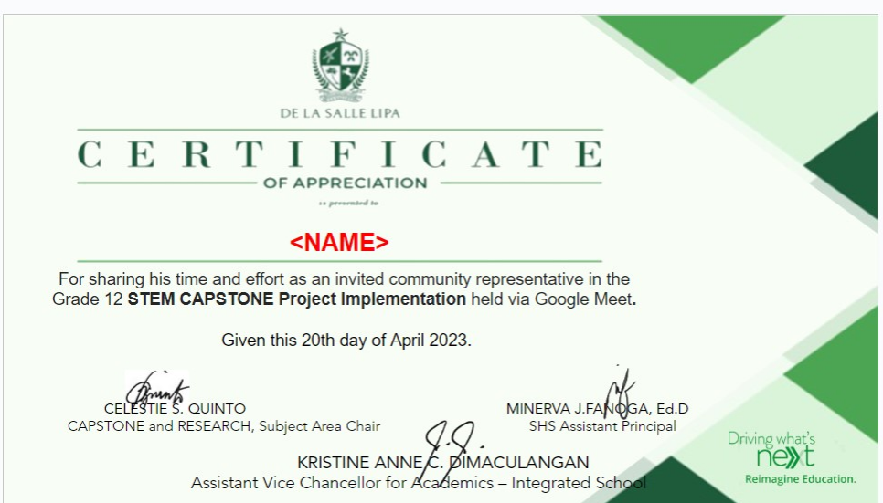

My Capstone Journey
About
Output
Reflection
Contact

Certificate of the Interviewing Process via data gathering through allocation of respondents
Last but not least, there is a certificate handed out to the residents and the volunteer respondents of Barangay Tambo to commemorate their participation.
« Previous